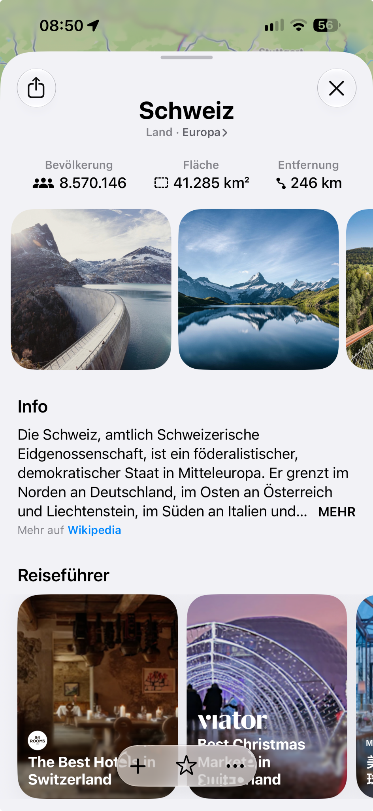

My prototype, presented internally in 2018, connects the camera view, spatial geometry and place information. I recreated place cards in SpriteKit for display within the camera view.
I developed the flyover further in SceneKit: more detailed 3D buildings, named streets and sidewalks, plus water and sky. I calculated the placement of street labels and boundaries and rendered them at runtime.
How the camera view, place data and 3D work together
SpriteKit · Camera and place cards
GPS and viewing direction positioned invisible building geometry around the user. A tap selected the first geometric hit along the viewing direction and displayed the associated information as a place card.
Maps · Geometry and place information
Geometry and available POI information came from Maps. When matching place information was unavailable, the prototype used available Zillow property information, such as rent or purchase prices and room details. The geometry still came from Maps.
SceneKit · Flyover in 3D
For the next prototype, I calculated how buildings, streets, names and boundaries were displayed and rendered them at runtime. Sidewalks, water and sky added spatial context for orientation.
MapsiMessage
BUSINESS CHAT
A place on the map. A direct line to the business.
Select a business in Maps and start a conversation in Messages directly from its place card.
My contribution
I developed the idea with a colleague, built prototypes, pitched and evaluated the approach. I implemented the messaging entry point in the Maps place card through to the released iOS feature, working with the Maps and iMessage teams.
I connected Apple and MessengerPeople and joined the first two conversations. The teams then continued the collaboration. Apple Business Chat complemented MessengerPeople’s WhatsApp offering, while Apple gained a suitable messaging partner.
Connect places with their wider context — for example, a country with its continent.
Text and metadata
Bring articles, population, area and other available information together in a coherent place view.
Understand and select images
Semantically match Wikimedia Commons media, organise it by topic and select appropriate images for display.
Filter unsuitable content
Develop and apply filters for explicit sexual or violent imagery.
My contribution
With the teams involved, I prepared and integrated Wikipedia text, images and metadata for Maps and other iOS/Mac features, and assessed their quality. Image selection, thematic organisation and content filtering were a substantial part of that work.
This content preparation was substantially more involved than integrating partners’ already structured data.

Switzerland example. The relevant parts are geographic context, metadata, images and Wikipedia text, not the guides below. Enlarge
A different data path.
Tripadvisor example: photos, rating, review count and reviews are retained. Enlarge
MapsTripadvisorYelp
POI · PARTNER-APIS
The right source. For each market.
Wikipedia does not comprehensively cover restaurants, hotels and businesses. Partners with ready-made data APIs filled those gaps.
Compare coverage
Which source offers the best coverage for a country or region?
Integrate partner data
Select and integrate an appropriate source for the relevant places.
Make content useful
Display photos, ratings and reviews with the provider clearly identified.
My contribution
I analysed coverage by country and region with different providers, selected suitable POI sources and worked with the teams on integration.
Capture indoor spaces and turn floor plans into practical orientation.
Shopping centres
Airports
Train stations
My contribution
I was responsible for indoor-navigation functionality and worked with the teams on iOS/Mac applications and the surveying app. In 2019 I wrote and documented Apple’s official sample project “Displaying an Indoor Map”. It shows other developers how to display IMDF floor plans using MapKit.
Coordinates and spatial information become understandable in the visible environment — not just on a map.
My contribution
I developed the early AR Maps idea, contributed hands-on development and led its cross-team implementation over roughly 18 months. The two films at the top show my prototype work.
Idea and development
Original concept and hands-on engineering.
Collaboration
Implementation across teams.
Development time
Roughly 18 months.
Outcome
Not released in this form; a foundation for later AR navigation in iOS.
Original ideas, technical implementation and collaboration across disciplines. Today, with MindFlow, I explore the capabilities and limitations of local AI.